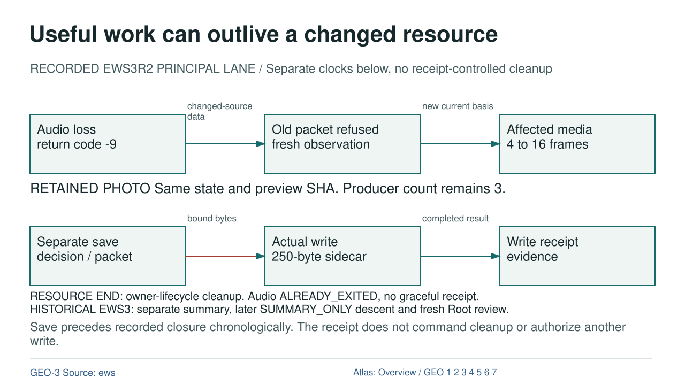

Useful work can outlive a changed resource

Diagram text equivalent
- Useful work can outlive a changed resource
- RECORDED EWS3R2 PRINCIPAL LANE / Separate clocks below, no receipt-controlled cleanup
- ENV: Audio loss return code -9
- Audio loss return code -9
- CURRENTNESS: Old packet refused fresh observation
- Old packet refused fresh observation
- WORK: Affected media 4 to 16 frames
- Affected media 4 to 16 frames
- DATA: changed-source data
- changed-source data
- DATA: new current basis
- new current basis
- RETAINED PHOTO Same state and preview SHA. Producer count remains 3.
- ROOT: Separate save decision / packet
- Separate save decision / packet
- EXECUTOR: Actual write 250-byte sidecar
- Actual write 250-byte sidecar
- RECEIPT: Write receipt evidence
- Write receipt evidence
- PERMISSION: bound bytes
- bound bytes
- DATA: completed result
- completed result
- RESOURCE END: owner-lifecycle cleanup. Audio ALREADY_EXITED, no graceful receipt. HISTORICAL EWS3: separate summary, later SUMMARY_ONLY descent and fresh Root review.
- Save precedes recorded closure chronologically. The receipt does not command cleanup or authorize another write.
- rule
- GEO-3 Source: ews
- Atlas: Overview / GEO 1 2 3 4 5 6 7
RECORDED EWS3R2 PRINCIPAL LANE / Separate clocks below, no receipt-controlled cleanup
OVERVIEW | GEO-1 | GEO-2 | GEO-3 | GEO-4 | GEO-5 | GEO-6 | GEO-7
Text Equivalent
Useful work can outlive a changed resource
RECORDED EWS3R2 PRINCIPAL LANE / Separate clocks below, no receipt-controlled cleanup
Audio loss return code -9
Old packet refused fresh observation
Affected media 4 to 16 frames
changed-source data
new current basis
RETAINED PHOTO Same state and preview SHA. Producer count remains 3.
Separate save decision / packet
Actual write 250-byte sidecar
Write receipt evidence
bound bytes
completed result
RESOURCE END: owner-lifecycle cleanup. Audio ALREADY_EXITED, no graceful receipt. HISTORICAL EWS3: separate summary, later SUMMARY_ONLY descent and fresh Root review.
Save precedes recorded closure chronologically. The receipt does not command cleanup or authorize another write.
GEO-3 Source: ews
Atlas: Overview / GEO 1 2 3 4 5 6 7
Exact Relations
- ENV to CURRENTNESS: DATA, changed-source data.
- CURRENTNESS to WORK: DATA, new current basis.
- ROOT to EXECUTOR: PERMISSION, bound bytes.
- EXECUTOR to RECEIPT: DATA, completed result.
Sources and Boundary
Colour is supplementary. Relation labels state what crosses each edge. Editorial ordering does not establish new runtime authority.